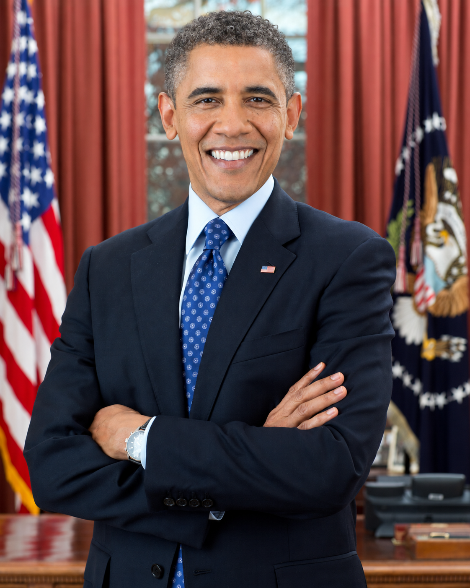

先看效果，再选风格。
三款真实生成的示例图，先比较发型与五官。

AI 效果 · 自然短卷选一个喜欢的轮廓
保存当前效果图 ↓选中发型，查看转头效果
当前已选：自然短卷
当前环境没有视频生成工具。此处不会用图片轮播代替转头视频。
原图、效果边界与素材来源
这些是预先生成的二维效果图，选择卡片只是切换已生成的结果。尚不支持上传本人照片后在线生成，也不支持实时调节长度、蓬松度。
三张结果保留了相近的表情和构图，但不保证像素级五官一致。第三款实际生成的是较蓬松卷发，未严格达到提示中的中长长度。侧面一致性尚未验证。
AI 试戴预览不代表真实剪发结果